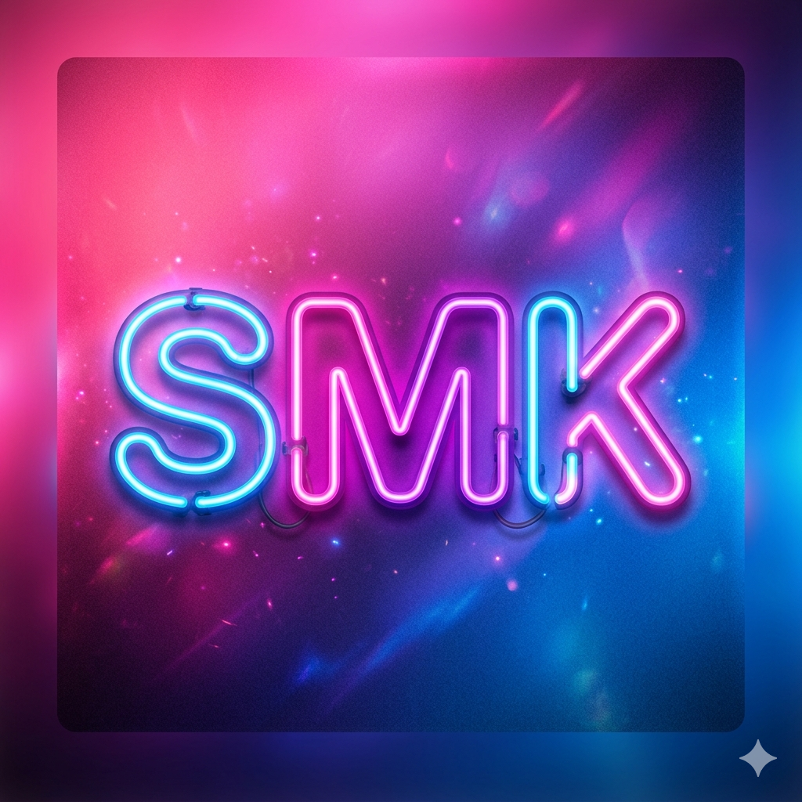

CREATE OUR OWN VIBES
「チームSMK」は、地元の友達5人で結成された運営・管理チームです。
SNSからシステムまで自分たちで整え、常に新しい「おもしろい」を企画し続けています。
チーム全体のまとめ役。SNS・システム管理を担当。
細かい管理と安定運営を支える守護神。
企画提案とSNS運営でチームを動かす存在。
ムードメーカーとして企画と動画で盛り上げる。
SNSの健全な運用と安全性を確保。管理の面からチームを支える。